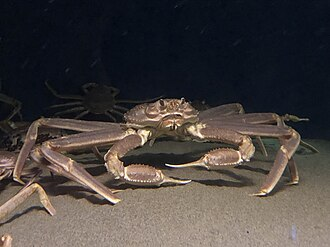

べにずわいがに（紅ズワイガニ）の漁獲量 都道府県ランキング
全10県の順位と、とれた量
べにずわいがにが日本でいちばん多くとれるのは島根県です。2,273 tで、全国（1万2,345 t）の18%を占めます。

| 順位 | 都道府県 | 漁獲量 | 全国に占める割合 |
|---|---|---|---|
| 1位 | 島根県 | 2,273 t | 18% |
| 2位 | 鳥取県 | 2,225 t | 18% |
| 3位 | 北海道 | 1,727 t | 14% |
| 4位 | 兵庫県 | 1,621 t | 13% |
| 5位 | 新潟県 | 1,411 t | 11% |
| 6位 | 秋田県 | 812 t | 6.6% |
| 7位 | 山形県 | 455 t | 3.7% |
| 8位 | 富山県 | 228 t | 1.8% |
| 9位 | 青森県 | 223 t | 1.8% |
| 10位 | 宮城県 | 4 t | 0.0% |
べにずわいがにの漁獲量の推移（令和4年〜令和6年）
全国の漁獲量は、令和4年の1万2,345 tから令和6年の1万2,345 tへ、ほとんど変わっていません。1位は入れ替わっています（令和4年は北海道、令和5年は島根県）。
| 年 | 全国 | 1位 | 2位 | 3位 |
|---|---|---|---|---|
| 令和6年 | 1万2,345 t | 島根県2,273 t | 鳥取県2,225 t | 北海道1,727 t |
| 令和5年 | 1万3,371 t | 島根県2,509 t | 鳥取県2,190 t | 新潟県1,803 t |
| 令和4年 | 1万2,345 t | 北海道2,123 t | 鳥取県2,035 t | 島根県1,777 t |
この数字について
- 分類：蟹の仲間
- 全国の漁獲量：1万2,345 t
- この数字が表すもの：漁獲量（海でとった重さ。養殖は含みません）
- 調査：海面漁業生産統計調査（海面漁業） 令和6年
- 10県分を調査（調査していない県は順位に入りません）
べにずわいがにの漁獲量について、よくある質問
- べにずわいがにの漁獲量が日本一の都道府県はどこですか？
- 島根県です。海面漁業生産統計調査（海面漁業）（令和6年）で2,273 tでした。
- べにずわいがにの漁獲量ランキング2位・3位はどこですか？
- 2位は鳥取県（2,225 t）、3位は北海道（1,727 t）です。
- べにずわいがにの漁獲量ランキング4位・5位はどこですか？
- 4位は兵庫県（1,621 t）、5位は新潟県（1,411 t）です。べにずわいがにの全10県の順位は上の表のとおりです。
- べにずわいがにの全国の漁獲量はどれくらいですか？
- 1万2,345 t（令和6年）です。